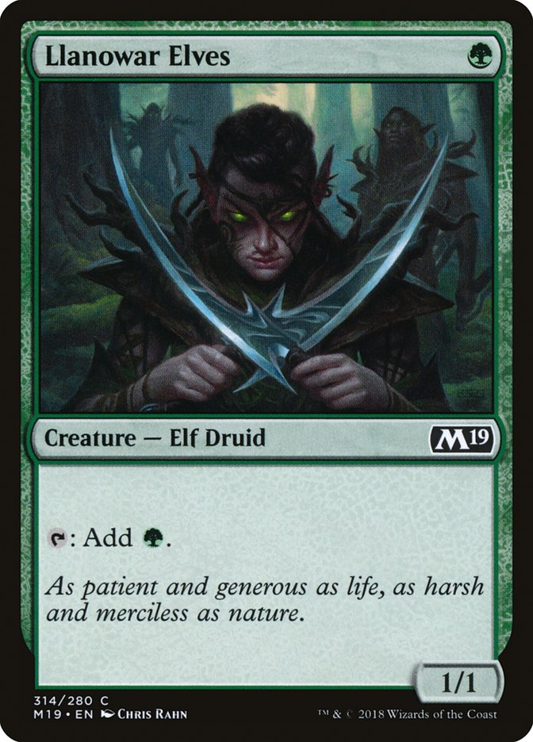
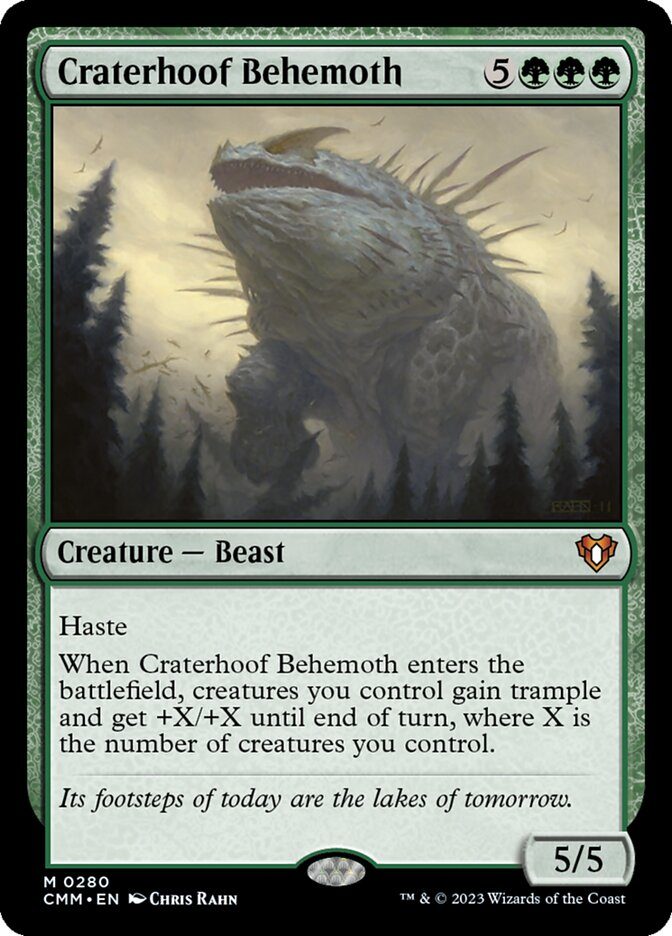
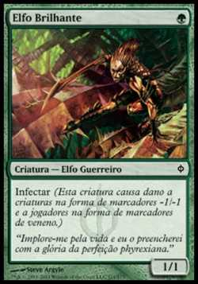

Verde: Crescimento, natureza e instinto
Teoria: O verde é a cor da natureza, da vida e do crescimento. Ele acredita na força das leis naturais e no ciclo da vida. O verde é impulsionado pelo instinto e pela conexão com a terra e os seres vivos.
Na prática: O verde é ótimo para gerar mana adicional e correr atrás de criaturas grandes. Ele também tem acesso a cartas que aumentam rapidamente seu campo de batalha e permitem ganhar poder por meio de criaturas grandes e destruição de artefatos e encantamentos.
Exemplo de cartas: Llanowar Elves, Craterhoof Behemoth, Glisterner elf.


